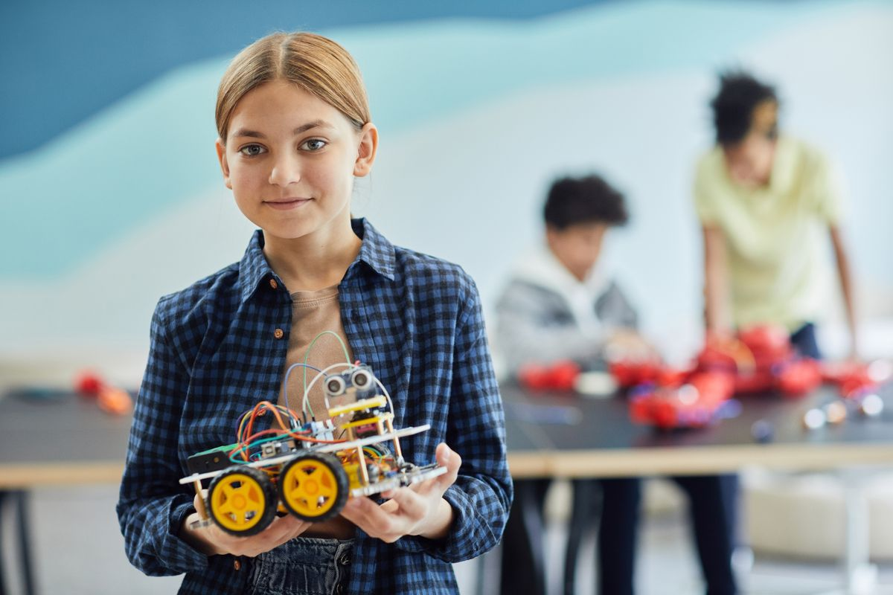

Lab 01
AI & Robotics Lab
A structured build sequence from first circuit to autonomous behaviour. Students work in pairs, document their iterations and present a working rover at the end of term.
- Block-to-text coding path from Class 6 to Class 8
- Ultrasonic, infrared and colour sensors
- Challenge course and termly robot games
- All tools and spares stored on campus